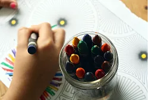
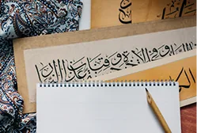
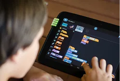
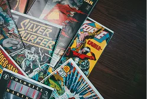
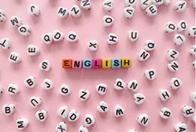
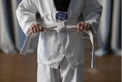

Pilar Kurikulum
Pilar Kurikulum
Sekolah Dasar (SD)
Pembelajaran Islami
Mengintegrasikan pendidikan agama, Tilawati, Tahfidz, Bahasa Arab, dan pembiasaan ibadah dalam kegiatan sehari-hari.
Keunggulan Akademik
Mengembangkan kemampuan siswa melalui pembelajaran Bahasa Inggris, Matematika, Sains, dan kegiatan proyek.
Karakter Kepemimpinan
Membentuk siswa yang disiplin, mandiri, peduli, bertanggung jawab, dan memiliki jiwa kepemimpinan.
Pengembangan Bakat
Memberikan ruang bagi siswa untuk berkembang melalui seni, olahraga, teknologi, bahasa, literasi, dan berbagai kegiatan.
Program Unggulan
Program Unggulan
Sekolah Dasar (SD)
Trial Class
Alazka
Diselenggarakan dengan sistem terstruktur dan tenaga pendidik kompeten.

Pembiasaan 9
Karakter
Diselenggarakan dengan sistem terstruktur dan tenaga pendidik kompeten.

Kegiatan Pagi
Murojaah & Dzikir
Menanamkan iman, takwa, serta akhlak mulia dalam keseharian proses belajar.

Shalat
Berjamaah
Mengembangkan ilmu pengetahuan dan keterampilan teknologi.

Latihan Rutin
Pramuka
Membekali siswa menghadapi dunia yang terus berkembang.
Program Hafalan
Tilawati
Diselenggarakan dengan sistem terstruktur dan tenaga pendidik kompeten.
Khotimul
Quran
Menanamkan iman, takwa, serta akhlak mulia dalam keseharian proses belajar.
Alazka
Literacy
Mengembangkan ilmu pengetahuan dan keterampilan teknologi.
Ekstrakurikuler Unit
Ekstrakurikuler & Intrakurikuler
Sekolah Dasar (SD)

Art & Clay
Mengembangkan kreativitas dan motorik halus melalui kegiatan.

Bahasa Arab
Mengenalkan percakapan dasar Bahasa Arab dengan menyenangkan.

Coding Bee
Melatih logika pemecahan masalah melalui aktivitas coding dasar.

Comic Reader
Meningkatkan minat baca, imajinasi, dan kemampuan memahami cerita.

Menari
Mengembangkan kelenturan, ekspresi, dan koordinasi gerak.

Fun English
Melatih kosakata dan komunikasi Bahasa Inggris melalui aktivitas interaktif.

Sains Experiment
Mengajak siswa memahami sains melalui percobaan sederhana.

Tahfidz Al-Quran
Membimbing siswa menghafal Al-Quran secara bertahap.
Basket
Melatih koordinasi, ketangkasan, kerja sama tim, dan sportivitas.

Taekwondo
Mengembangkan disiplin, fokus, keberanian, dan kemampuan menjaga diri.
Fasilitas Unit
Fasilitas Unggulan
Sekolah Dasar (SD)
 Fasilitas 1
Fasilitas 1Ruang Kelas
Menciptakan suasana belajar yang interaktif dan nyaman.
 Fasilitas 2
Fasilitas 2Masjid Sekolah
Menumbuhkan iman dan akhlak melalui lingkungan ibadah yang nyaman.
 Fasilitas 3
Fasilitas 3Studio Musik
Mengembangkan kreativitas dan bakat dalam bermusik.
 Fasilitas 4
Fasilitas 4Perpustakaan Anak
Menghadirkan ruang membaca untuk menumbuhkan literasi.
 Fasilitas 5
Fasilitas 5Lapangan Olahraga
Ruang aktif untuk berolahraga dan membangun sportivitas.
 Fasilitas 6
Fasilitas 6Kolam Renang
Mendukung kebugaran dan keterampilan berenang dengan aman.
 Fasilitas 7
Fasilitas 7Greenhouse Anak
Mengenalkan kepedulian lingkungan melalui pembelajaran langsung.
 Fasilitas 8
Fasilitas 8Kantin Anak
Menyediakan makanan bergizi dalam lingkungan yang nyaman.
Fasilitas 9
UKS
Memberikan layanan kesehatan dasar, perlindungan pertama, serta edukasi pola hidup bersih dan sehat.
Daftarkan Putra-Putri Anda
Bergabunglah dengan keluarga besar Al-Azhar Kelapa Gading dan buka potensi terbaik ananda sejak usia dini.